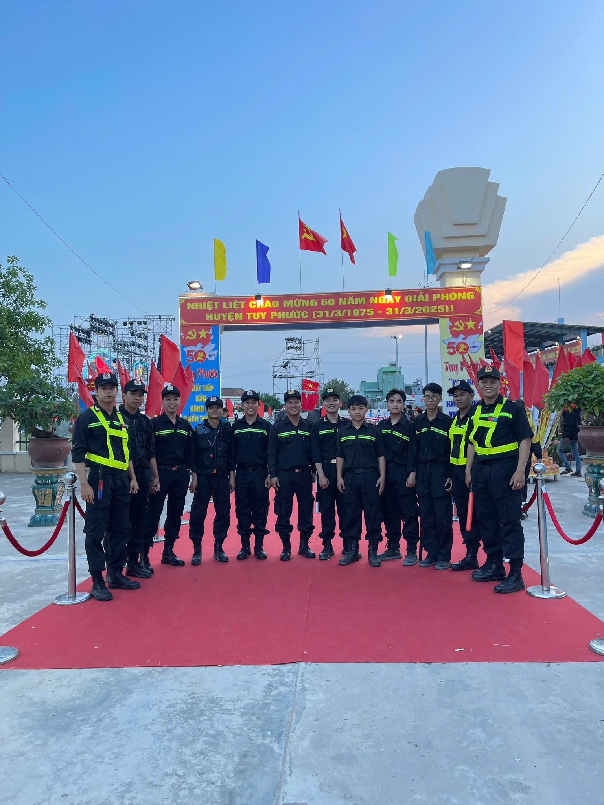
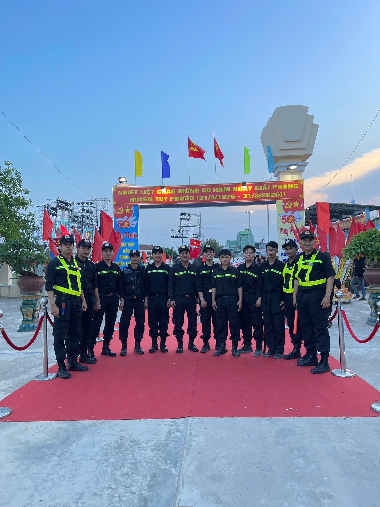

LỜI KÊU GỌI
Với nhiệt huyết của tuổi trẻ và cống hiến cho xã hội khẳng định vị thế của thanh niên Phước Lộc đối với bạn bè trên mọi miền tổ quốc.
Với nhiệt huyết của tuổi trẻ và cống hiến cho xã hội khẳng định vị thế của thanh niên Phước Lộc đối với bạn bè trên mọi miền tổ quốc.
- Phước Lộc có 3 tuyến quốc lộ trọng điểm đi qua do vậy tình hình Tai Nạn giao thông và ANTT khá phức tạp.
Đội TNXK - ANTT - PCCC & CNCH Phước Lộc kêu gọi Những Thanh Niên Trẻ sống trên địa bàn xã Phước Lộc và các xã lân cận gia nhập đội TNXK Phước Lộc để giúp mọi người về khuya, hỗ trợ tai nạn, ứng cứu người gặp khó khăn và đảm bảo công tác ANTT, giúp lưu thông khi có sự cố xảy ra.
Là người có Tâm, sống thật thà và có tính đoàn kết cao, không cần bằng cấp chỉ cần có TẤM LÒNG nhiệt huyết vì Xã Hội vì Cộng Đồng.
+ Lưu ý: Đây là công tác tự nguyện được cấp lãnh đạo quan tâm, là mô hình được lan rộng khắp cả nước.